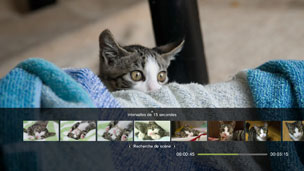
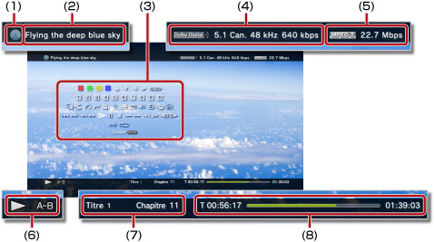

Vidéo > Utilisation du panneau de configuration
Utilisation du panneau de configuration
Pour effectuer diverses opérations à l'aide du panneau de configuration à l'écran. Le panneau de configuration peut être affiché ou masqué en appuyant sur la touche  .
.
Les icônes affichées sur cette page sont définies comme suit :
 |
Vidéo enregistrée sur un Blu-ray Disc (BD) en lecture seule |
|---|---|
 |
Vidéo enregistrée sur un BD réinscriptible |
 |
Vidéo enregistrée au format AVCHD |
 |
|
 |
Vidéo enregistrée au mode VR sur DVD-R / DVD-RW |
 |
Fichiers vidéo enregistrés dans le stockage système |
 |
Fichiers vidéo enregistrés sur un support de stockage* |
| * |
Un adaptateur USB approprié (non fourni) est nécessaire pour utiliser le support de stockage avec certains modèles. |
|---|
Avis
Certains contenus peuvent avoir des conditions de lecture prédéfinies par le développeur du contenu. Dans de tels cas, certains éléments du panneau de configuration risquent de ne pas être disponibles.
Icônes rouge / vert / jaune / bleu

Pour effectuer les opérations correspondant à l'icône. Les fonctionnalités attribuées à l'icône varient en fonction du contenu.
Haut / Bas / Gauche / Droit

Sélectionnez un élément.
Valider
Pour confirmer l'option sélectionnée.
Pad numérique
Menu contextuel
Pour afficher le menu contextuel.
Menu
Menu principal
Retour
Pour revenir à un point spécifique de la vidéo.
Recherche de scène


Utilisez cette fonction pour afficher les miniatures créées à intervalles déterminés. Sélectionnez une miniature pour lancer la lecture de la vidéo à partir de cette scène particulière.

1. |
Appuyez sur la touche |
|---|
 ou
ou  pour sélectionner l'intervalle à utiliser lors de la création des miniatures. Vous avez le choix entre [Chapitre] ou l'un des intervalles proposés.
pour sélectionner l'intervalle à utiliser lors de la création des miniatures. Vous avez le choix entre [Chapitre] ou l'un des intervalles proposés.2. |
Utilisez la touche |
|---|
 ou
ou  pour sélectionner la miniature de la scène que vous souhaitez regarder. La lecture commence à partir de la scène sélectionnée.
pour sélectionner la miniature de la scène que vous souhaitez regarder. La lecture commence à partir de la scène sélectionnée.Conseils
- L'option [Chapitre] ne peut être sélectionnée que pour du contenu vidéo comprenant des informations sur les chapitres.
- La fonction de recherche de scène ne peut pas être utilisée pour du contenu vidéo de moins d'une minute.
- La fonction de recherche de scène ne peut pas être utilisée avec certains types de contenus vidéo.
- Lorsque vous sélectionnez une miniature, un aperçu de la scène est lu pendant environ 15 secondes.
Aller à


Pour lire depuis un chapitre ou un moment spécifié.
| Titre X | Pour spécifier le numéro du titre. |
|---|---|
| Chapitre X | Pour spécifier le numéro du chapitre. |
| XX:XX / XX:XX:XX | Pour spécifier l'heure. |
Conseil
En fonction du fichier vidéo, il peut être impossible d'utiliser (Aller à).
Options angle de vue
Pour sélectionner un des angles de vue disponibles pour le contenu enregistré sous des angles multiples.
Options audio
Pour sélectionner une des options audio disponibles pour le contenu enregistré avec des pistes audio multiples.
Options sous-titres
Sélectionnez une option de sous-titres disponible pour le contenu enregistré avec des sous-titres en plusieurs langues. Les sous-titres peuvent être sélectionnés quand ils sont pris en charge dans le contenu.
Conseils
- Pour afficher les sous-titres, vous devez accéder à
 (Paramètres) > (Paramètres vidéo) > [Sous-titres] et sélectionner [Oui].
(Paramètres) > (Paramètres vidéo) > [Sous-titres] et sélectionner [Oui]. - Le réglage des sous-titres n'est disponible que sur les systèmes PS3™ vendus en Amérique du Nord.
Options de style des sous-titres
Pour sélectionner une des options d'affichage disponibles pour le contenu enregistré avec des styles de sous-titres multiples.
Contrôle du volume
Pour régler le niveau de sortie du volume du contenu lu sous  (Vidéo). Sélectionnez l'un des neuf niveaux.
(Vidéo). Sélectionnez l'un des neuf niveaux.
Conseils
- Le son risque d'être déformé si le niveau de volume est trop élevé. Dans ce cas, réduisez le niveau de volume.
- Ce paramètre peut être désactivé lorsque vous utilisez certains périphériques audio ou lorsque vous reproduisez certains types de son.
Paramètres AV
Pour modifier les paramètres liés à la sortie du contenu lu sous (Vidéo). Les options affichées varient selon le contenu.
| Réduction du bruit d'image | Pour réduire les parasites légers. |
|---|---|
| Réduction du bruit de bloc | Pour réduire les parasites de type mosaïque affichés à l'écran. |
| Réduction de l'effet Gibb | Pour réduire l'effet Gibb qui apparaît sur les bords des images. |
| Rehausser | Pour activer la sortie rehaussée. La valeur que vous définissez apparaît dans [BD/DVD - Rehaussement] sous (Paramètres) > (Paramètres vidéo). |
| Format de sortie vidéo | Sélectionnez le format de sortie vidéo. Sélectionnez le format de sortie vidéo adapté à la lecture des disques BD ou DVD. La valeur que vous définissez apparaît dans [BD/DVD - Format de sortie vidéo (HDMI)] sous (Paramètres) > (Paramètres vidéo). |
| Y Pb/Cb Pr/Cr super-blanc | Pour un affichage super-blanc. Les signaux super-blancs peuvent à présent être reproduits lors de la lecture d'un disque DVD, BD ou AVCHD. La valeur sélectionnée se reflète dans [Y Pb/Cb Pr/Cr super-blanc (HDMI)] sous (Paramètres) >  (Paramètres affichage). (Paramètres affichage). |
| Gamme complète RGB | Pour sélectionner l'affichage de la gamme RGB complète. La valeur définie se reflète dans l'option [Gamme complète RGB] sous (Paramètres) > (Paramètres affichage). |
| Commande de plage dynamique | Pour activer la commande de plage dynamique. Activez ou désactivez la commande de plage dynamique de votre système PS3™ pendant la lecture de BD et de DVD qui reproduisent un son Dolby Digital. La valeur que vous définissez se reflète dans le paramètre [BD/DVD - Commande de plage dynamique] sous (Paramètres) > (Paramètres vidéo). |
| Format de sortie audio | Sélectionnez le format de sortie audio. Sélectionnez le format de sortie audio adapté à la lecture des disques BD ou DVD. La valeur que vous définissez apparaît dans [BD/DVD - Format de sortie audio (HDMI)] ou [BD - Format de sortie audio (numérique optique)] sous (Paramètres) > (Paramètres vidéo). |
Options temps
Pour afficher le temps écoulé ou le temps restant pour un titre ou un chapitre. Les éléments affichés varient en fonction du contenu lu.
Mode écran
Pour modifier le mode écran.
| Normal | Pour que l'affichage de la vidéo corresponde à la taille de l'écran sans en modifier les proportions. |
|---|---|
| Zoom | Pour afficher la vidéo en plein écran sans en modifier les proportions. Des portions de la vidéo en haut et en bas ou à gauche et à droite sont coupées. |
| Plein écran | Pour afficher le contenu en mode plein écran en modifiant les proportions et en étirant l'image verticalement et horizontalement. |
| Original | Pour afficher la vidéo dans sa taille originale. |
Conseil
En fonction du fichier vidéo, il risque de ne pas être possible de modifier le mode écran.
Changer icône
Pour changer l'icône (image miniature) associée à un fichier vidéo. Pendant la lecture du fichier vidéo, sélectionnez (Changer icône) lorsque l'image que vous souhaitez sélectionner comme icône est affichée.
Conseils
- En fonction du fichier vidéo, il risque de ne pas être possible de modifier l'icône.
- Un fichier vidéo plus court que deux secondes ne peut pas être utilisé comme icône.
Supprimer
Pour supprimer un fichier vidéo en cours de lecture.
Affichage
Pour afficher l'état de lecture et d'autres informations associées. Les informations affichées varient en fonction du contenu lu.

(1) |
Support |
|---|---|
(2) |
Titre |
(3) |
Panneau de configuration |
(4) |
Codec son / numéro de canal / taux d'échantillonnage / débit binaire |
(5) |
Codec vidéo / débit binaire |
(6) |
Icône d'état |
(7) |
Titre / chapitre |
(8) |
Temps écoulé / temps total |
Précédent (revenir au début) / Suivant
Pour accéder au chapitre précédent ou suivant.
Conseil
Lors de la lecture de fichiers vidéo sauvegardés sur un support de stockage ou dans le stockage système,  (Suivant) n'est pas disponible. De même, si vous sélectionnez
(Suivant) n'est pas disponible. De même, si vous sélectionnez  (Précédent), la lecture du fichier vidéo reprend au début.
(Précédent), la lecture du fichier vidéo reprend au début.
Retour rapide / Avance rapide
Pour faire reculer ou avancer rapidement le contenu lu. A chaque fois que vous appuyez sur la touche  , la vitesse de lecture change.
, la vitesse de lecture change.
Conseil
Vous pouvez utiliser le joystick droit de la manette sans fil pour reculer ou avancer rapidement pendant la lecture du contenu vidéo. Utilisez le joystick droit pour commander la vitesse. Vous ne pouvez pas utiliser le joystick droit pour commander la vitesse de lecture pendant la lecture d'un contenu Blu-ray 3D™.
Lire
Pour démarrer la lecture du contenu.
Conseil
Dans la plupart des cas, la prochaine fois que vous lisez un contenu vidéo dont la lecture a été arrêtée, la lecture reprend là où elle s'est précédemment arrêtée.
Pour lire le fichier depuis le début, appuyez sur la touche PS afin d'arrêter la lecture et d'afficher le menu XMB™. Sélectionnez l'icône, appuyez sur la touche et sélectionnez [Lire depuis le début] dans le menu d'options.
Pause
Pour interrompre temporairement la lecture.
Arrêter
Lecture accélérée (arrière) / Lecture accélérée (avant)
Pour vous déplacer de 15 secondes en arrière ou de 15 secondes en avant dans la vidéo.
Ralenti (arrière) / Ralenti (avant)
Retour image par image / Avance image par image
Répétition A-B
Pour lire une section spécifiée du contenu à plusieurs reprises.
1. |
Au début de la section à répéter, sélectionnez |
|---|---|
2. |
A la fin de la section à répéter, appuyez sur la touche |
Conseil
Pour supprimer la fonction de répétition A-B, sélectionnez (Répétition A-B).
Répétition
Pour lire le contenu à plusieurs reprises.
Conseil
Pour annuler la fonction de répétition, sélectionnez (Répétition) jusqu'à ce que [Répétition désactivée] s'affiche.